|
<< Click to Display Table of Contents >> Картотека пациентов. Редактор информации о пациенте |

|
|
<< Click to Display Table of Contents >> Картотека пациентов. Редактор информации о пациенте |
|
☝На форме используются типовые элементы, подробно описанные в разделе "Основные управляющие элементы". Для наилучшего понимания их работы в данном контексте, необходимо предварительно ознакомиться с их описанием.
Вызывается из основной формы картотеки. Имеет два режима работы: редактирование и добавление. Для редактирования информации о пациенте нужно кликнуть на иконку редактирования  в "плашке", для добавления нового пациента - нажать на кнопку Добавить пациента. Сам редактор условно делится на две области: основная область и навигатор.
в "плашке", для добавления нового пациента - нажать на кнопку Добавить пациента. Сам редактор условно делится на две области: основная область и навигатор.
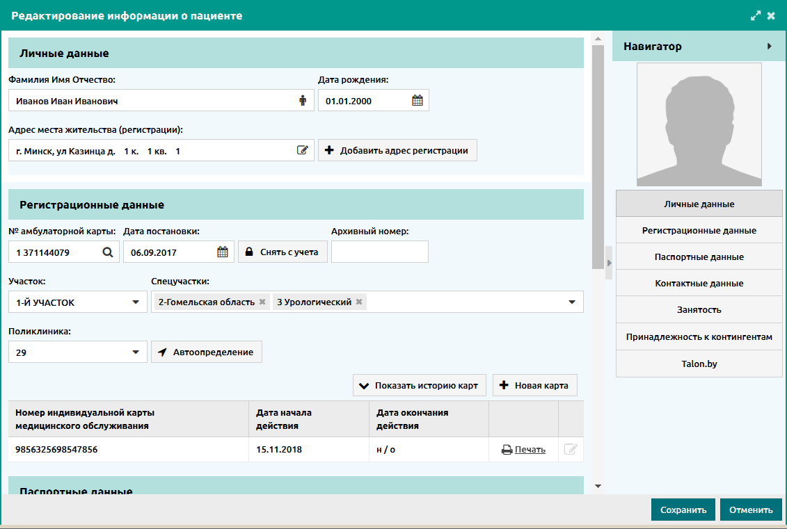
Основная область содержит следующие разделы.
Личные данные
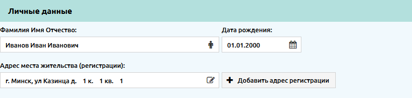
Блок содержит поля:
•Фамилия Имя Отчество. Вводятся через пробел. Для указания пола пациента нужно кликнуть на иконку: при клике пол меняется на противоположный.
•Дата рождения. Вводится вручную в формате ЧЧ.ММ.ГГГГ (число, месяц, год) либо выбирается из календаря.
•Адрес места жительства (регистрации). Для редактирования адреса (адрес уже есть в поле) нужно нажать на иконку  . Откроется модальное окно "Редактирование адреса".
. Откроется модальное окно "Редактирование адреса".
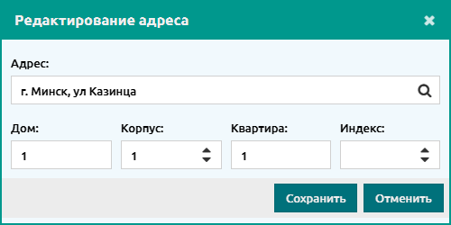
В поле Адрес данные заполняются выбором из справочника "Адреса": кликнуть по  и в форме "Выбор адреса" выполнить поиск. Выбор записи происходит двойным кликом по записи, либо нажатием на кнопку Выбрать. Поля Адрес, Корпус, Квартира, Индекс заполняются без особенностей прямым вводом с клавиатуры. После нажатия на кнопку Сохранить будет выведен диалог с предложением определить участки и поликлинику автоматически.
и в форме "Выбор адреса" выполнить поиск. Выбор записи происходит двойным кликом по записи, либо нажатием на кнопку Выбрать. Поля Адрес, Корпус, Квартира, Индекс заполняются без особенностей прямым вводом с клавиатуры. После нажатия на кнопку Сохранить будет выведен диалог с предложением определить участки и поликлинику автоматически.
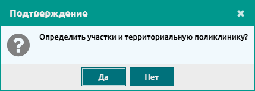
При клике на кнопку Да - автоматическое определение будет выполнено: участки и поликлиника подставятся в соответствующие поля в разделе "Регистрационные данные". При клике на Нет - диалог будет закрыт, адрес будет подставлен в поле.
При необходимости можно добавить и адрес регистрации. Для этого нужно нажать на кнопку Добавить адрес регистрации - ниже будет добавлено пустое поле для ввода и при клике на  сразу откроется форма "Выбор адреса". кнопка Удалить адрес - удаляет строку с адресом регистрации.
сразу откроется форма "Выбор адреса". кнопка Удалить адрес - удаляет строку с адресом регистрации.
Регистрационные данные
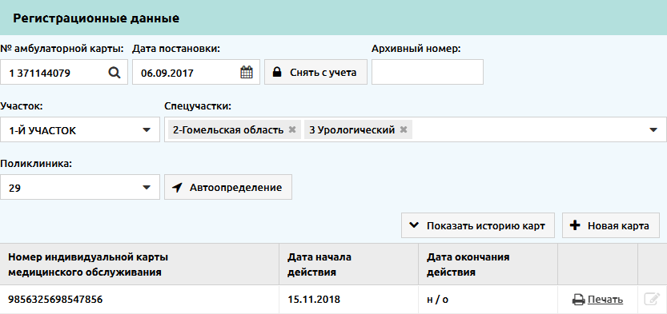
В блоке представлены элементы:
•№ амбулаторной карты. Уникальный номер, который присваивается пациенту при первичной регистрации. Назначается автоматически только при первой регистрации пациента, но может быть установлен вручную. При клике на иконку  будет выполнен поиск свободного номера амбулаторной карты и подстановка номера в поле.
будет выполнен поиск свободного номера амбулаторной карты и подстановка номера в поле.
•Дата постановки. Дата, когда пациент принят на учёт в данное медучреждение.
•Кнопка Снять с учёта. При клике появятся элементы: поля Дата снятия (по умолчанию текущая) и Причина снятия (выбирается из списка), кнопка "Отменить выбытие" - при клике дата и причина снятия очищаются, поля скрываются.
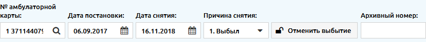
•Архивный номер. Дополнительное поле, заполняется после снятия с учёта.
•Участок. Выбирается из списка участков. Список участков определяет территориальное разделение зоны обслуживания и зоны проживания иногородних.
•Спецучасток. Поле с мультивыбором. Выбираются участки в дополнение к основному (терапевтическому), к которым принадлежит пациент (например, участок женской консультации).
•Поликлиника. Выбирается из списка территориальных поликлиник по справочнику.
•Кнопка Автоопределение. При клике вызывается функция автоматического определения участков и поликлиники согласно настройкам, выполненным в справочнике "Настройка участков".
Блок с данными по индивидуальной карте медицинского обслуживания (ИКМО) содержит управляющие кнопки и таблицу с записями (картами).
Таблица содержит реквизиты и кнопки:
•Номер индивидуальной карты медицинского обслуживания. Поддерживает ввод 16-ти символов.
•Дата начала действия. При добавлении новой карты устанавливается текущая дата. Можно изменить вручную или выбрать из календаря.
•Дата окончания действия. Не указывается для действующей карты.
•Кнопка Печать. При клике открывается диалог для печати соглашения об использовании пластиковой карты для данного пациента.
•Кнопка редактирования  . При клике открывается редактор карты медицинского обслуживания, где редактируются данные, представленные в таблице.
. При клике открывается редактор карты медицинского обслуживания, где редактируются данные, представленные в таблице.
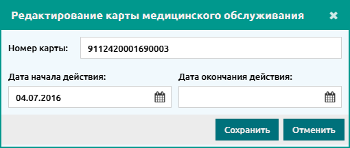
•Кнопка Показать историю карт. При клике в таблице отображаются строки с "просроченными" картами (с заполненной датой окончания). Для скрытия нужно нажать кнопку Скрыть историю карт.
•Кнопка Новая карта. Служит для добавления новой карты - при клике открывается редактор.
Паспортные данные
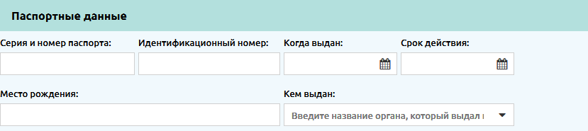
Блок содержит поля:
•Серия и номер паспорта. Поддерживает ввод 9-ти символов.
•Идентификационный номер. Поддерживает ввод 14-ти символов.
•Когда выдан, Срок действия. Дата указывается вручную или выбирается из календаря.
•Место рождения. Может содержать текст любой длины.
•Кем выдан. Поле для ввода государственного органа, выдавшего паспорт. При вводе выражения появляется список значений, который соответствует этому выражению, т.е. используется механизм "подгрузки" значений, вводимых ранее.
Контактные данные
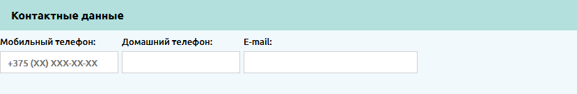
Блок содержит поля:
•Мобильный телефон. Содержит маску ввода в международном формате +375 (ХХ) ХХХ-ХХ-ХХ. При вводе номер телефона будет автоматически приведён к данному формату.
•Домашний телефон. Поддерживается ввод номера телефона в любом формате.
•E-mail. Поле для ввода адреса электронной почты.
Занятость
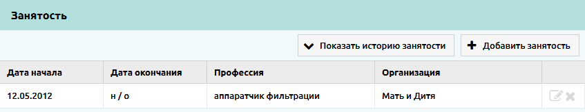
Блок содержит таблицу, в которой указаны дата начала и дата окончания работы в данной профессии и организации. В конце строки таблицы располагаются стандартные кнопки редактирования  и удаления . Для удаления занятости нужно нажать на и положительно ответить на подтверждающий диалог. При нажатии на
и удаления . Для удаления занятости нужно нажать на и положительно ответить на подтверждающий диалог. При нажатии на  открывается редактор занятости.
открывается редактор занятости.
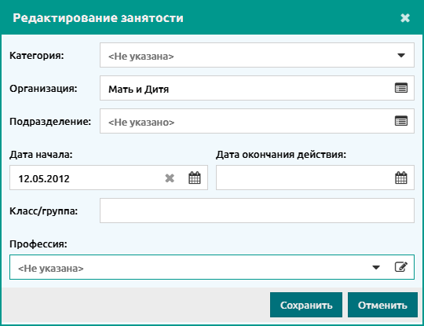
Редактор содержит поля и кнопки:
•Категория. Из списка выбирается категория организации, внесенная ранее в справочник "Категории организаций".
•Организация. Название организации, выбирается из формы "Выбор организации", основанной на справочнике "Организации".
•Подразделение. Название подразделения выбранной выше организации. Выбирается из формы "Выбор подразделения", основанной на справочнике "Подразделения".
•Дата начала и Дата окончания. Даты начала и окончания работы в указанной должности/профессии.
•Класс/группа. Указывается для учащихся. Вносится как текст с клавиатуры.
•Профессия. Название профессии/должности, выбирается из списка либо из справочника "Профессии", вызванного по нажатию на кнопку  .
.
Над таблицей расположены кнопки:
•Показать историю занятости. При клике на кнопку в таблице отобразятся все "завершённые" занятости (дата окончания заполнена), которые когда-либо были у пациента.
•Скрыть историю занятости. Клик на кнопку скрывает неактуальные занятости (строки таблицы).
•Добавить занятость. Кнопка служит для добавления новой занятости. При клике открывается редактор.
Принадлежность к контингентам
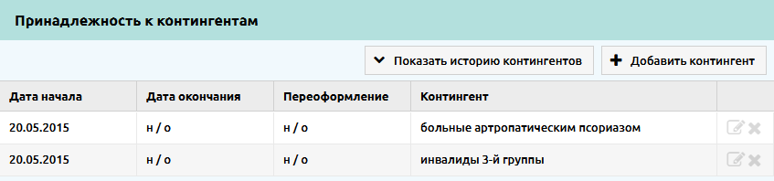
Блок содержит таблицу, в строках которой указаны даты начала, окончания и переоформления контингента, наименование контингента. В конце каждой записи таблицы располагаются стандартные кнопки редактирования  и удаления . Для удаления принадлежности к контингенту нужно нажать на и положительно ответить на подтверждающий диалог. При клике на
и удаления . Для удаления принадлежности к контингенту нужно нажать на и положительно ответить на подтверждающий диалог. При клике на  открывается редактор принадлежности к контингентам.
открывается редактор принадлежности к контингентам.
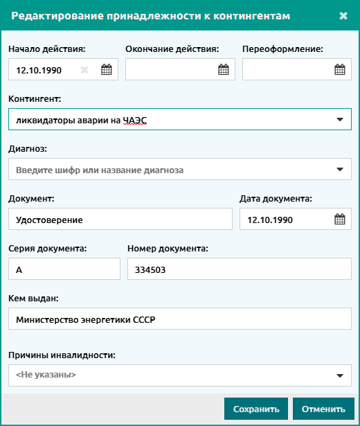
Редактор содержит поля:
•Начало действия, Окончание действия, Переоформление. Даты начала действия льготы, окончания и переоформления соответственно.
•Контингент. Название контингента, выбирается из выпадающего списка. Поддерживается ручной ввод.
•Диагноз. Шифр и наименование диагноза, выбирается из выпадающего списка. Поддерживается ручной ввод.
•Документ, Дата документа, Серия документа, Номер документа, Кем выдан. Данные о документе, подтверждающем принадлежность пациента к контингенту: название документа, дата оформления, серия и номер, название выдавшего документ органа.
•Причины инвалидности. Выбор из списка причин инвалидности.
Над таблицей расположены кнопки:
•Показать историю контингентов. При клике на кнопку в таблице отобразятся все неактуальные контингенты (дата окончания заполнена), которые когда-либо были у пациента.
•Скрыть историю контингентов. Клик на кнопку скрывает неактуальные контингенты (строки таблицы).
•Добавить контингент. Кнопка служит для добавления новой принадлежности к контингенту. При клике открывается редактор.
Навигатор
Содержит элементы:
•Область с фото пациента. По умолчанию используется стандартная фотография-заглушка, зависящая от пола пациента. При наведении мышкой фото-заглушку появляется область с кнопками Выбрать фото и Удалить фото . При нажатии на Выбрать фото открывается проводник файловой системы для выбора файла фотографии.
☝Рекомендуется загружать фотографии размером 180*180px.
☝Допускается загружать фотографии объёмом не более 200 Кбайт. В случае загрузки файла большего объёма программа выдаст предупреждающее сообщение и фотография не будет загружена.
•Навигационные элементы. Представляют собой названия разделов (Личные данные, Регистрационные данные, Паспортные данные, Контактные данные, Занятость, Принадлежность к контингентам) в виде кнопок-ссылок, при клике на которые происходит переход в нужный раздел.
•Кнопка Talon.by. Служит для управления доступом к электронной амбулаторной карте на сайте talon.by. При клике открывается редактор разрешения поликлиники на отображение данных электронной амбулаторной карты (ЭАК) пациента в его в личном кабинете (ЛК) на сайте.
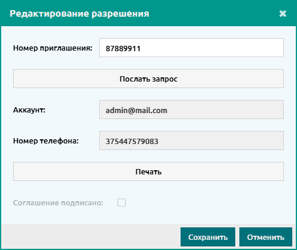
Редактор содержит элементы:
•Номер приглашения. 8-ми значный цифровой код, полученный пациентом в своём ЛК и переданный регистратору медучреждения при личном посещении. Код является основанием для предоставления пациенту доступа к его ЭАК в своём ЛК.
•Кнопка Послать запрос. Служит для проверки намерения пациента подключить ЭАК в свой ЛК. При нажатии происходит запрос к базе данных сайта talon.by и, если по данному коду такой пациент там найден, то в полях Аккаунт и Номер телефона отобразятся данные. В случае, если такой пациент не будет найден, то будет выдано предупреждающее сообщение.
•Аккаунт и Номер телефона. Нередактируемые поля, отображают данные в случае успешной проверки наличия связи пациента с предоставленным кодом.
•Кнопка Печать. Становится активной после успешной проверки. При клике будет распечатана "Форма информированного согласия пациента на обработку и передачу персональных данных по электронным каналам связи".
•Отметка Соглашение подписано. В случае подписания пациентом Формы, регистратор устанавливает отметку, после чего после сохранения доступ к ЭАК пациента в его ЛК открывается. Если отметка не проставлена, то при сохранении будет выдано сообщение о невозможности сохранить данные; доступ к ЭАК не будет открыт.